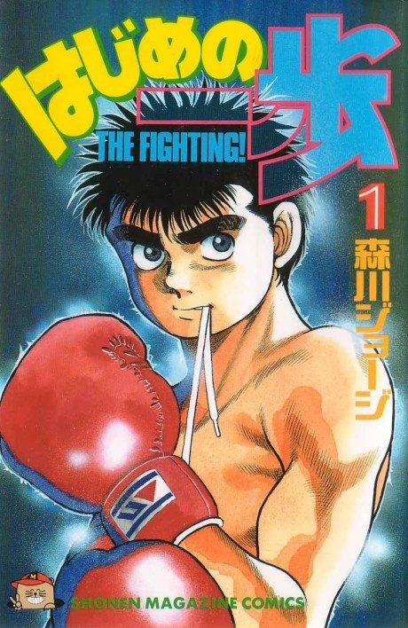

Animeter
 Anime
Anime
Manga2000 · Comedy, Drama, Sports
Hajime no Ippo
はじめの一歩 THE FIGHTING!
AniList8.7
Animeter—
3 seasons126 ep
MangaCh. 558
3 seasons, 126 episodes
In airing order. Episode numbers on this site count straight through every season, so season 2 starts at episode 76.
1
2000 · TV
Hajime no Ippo: The Fighting!
Episodes1–7575 ep
2
2009 · TV
Hajime no Ippo: The Fighting! New Challenger
Episodes76–10126 ep
3
2013 · TV
Hajime No Ippo: The Fighting! - Rising -
Episodes102–12625 ep
Films, OVAs and specials
Not counted in the episode numbers above.
·
2003 · Special
Hajime no Ippo: The Fighting! - Champion Road
·
2003 · OVA
Hajime no Ippo: The Fighting! - Mashiba vs Kimura
Sources: AniList